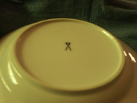
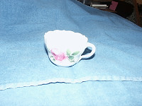
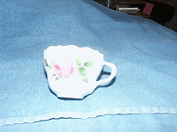
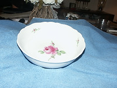
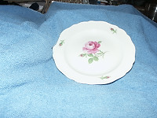
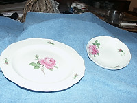
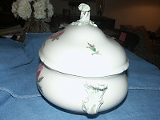
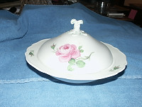

|

Meissen mark - taken with no flash as it reflected too much to see. |

luncheon plate |

cup |

cup |

split vegetable dish |

meat platter - will hold a turkey |

soup bowl or small vegetable bowl |

salad plate |
|

salad plate again |

luncheon plate and saucer |

plate showing the pink rose pattern better than others |

soup tureen |

soup tureen |

soup tureen |

coffee (or tea) set with sugar bowl and creamer |

covered vegetable dish |

covered vegetable with lid partially removed |

another coffee-tea set, but with gold trim |

cup and saucer |